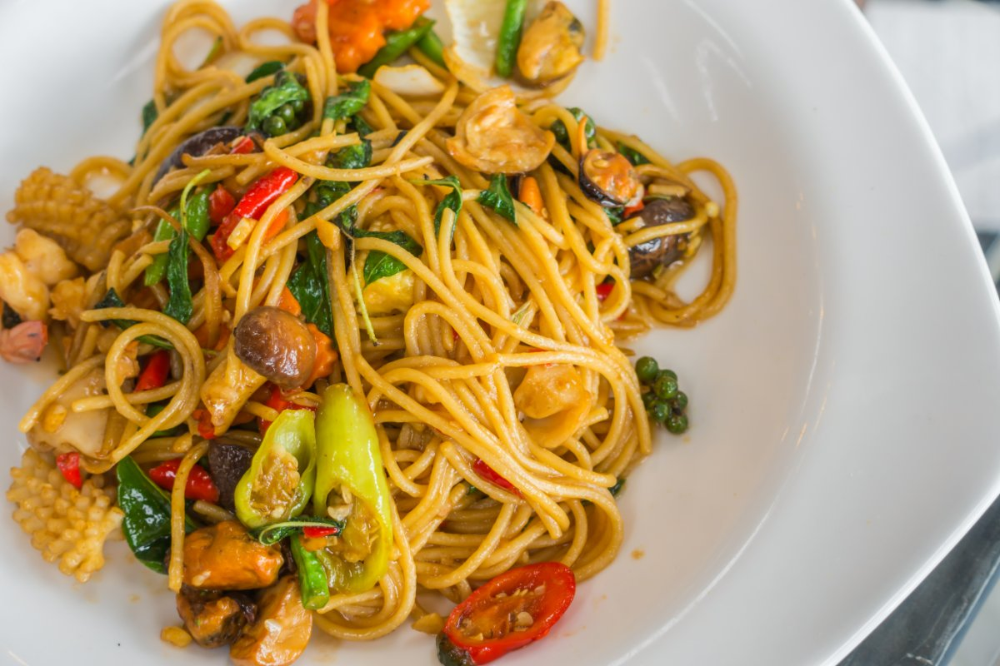

More from the journal

PCOS
PCOS and the plate: what a low-GI diet really means
It affects up to 13% of women, and most are never diagnosed. Here is why insulin sits at the centre of it, and what a 12-month trial found food could do.
Read →
Endometriosis
Endometriosis: the long wait, and eating for inflammation
190 million women live with it, and diagnosis takes seven to nine years. While the system catches up, what can an anti-inflammatory diet realistically offer?
Read →
PMS & mood
The week before your period: understanding the luteal dip
The cravings and low mood are real, and they have a name. What happens to your hormones, and how magnesium, B6 and steady blood sugar help.
Read →